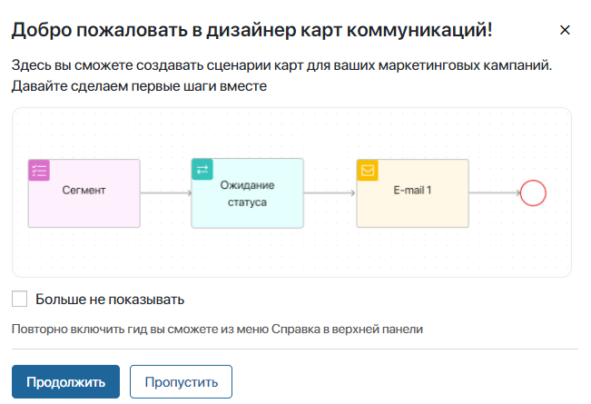
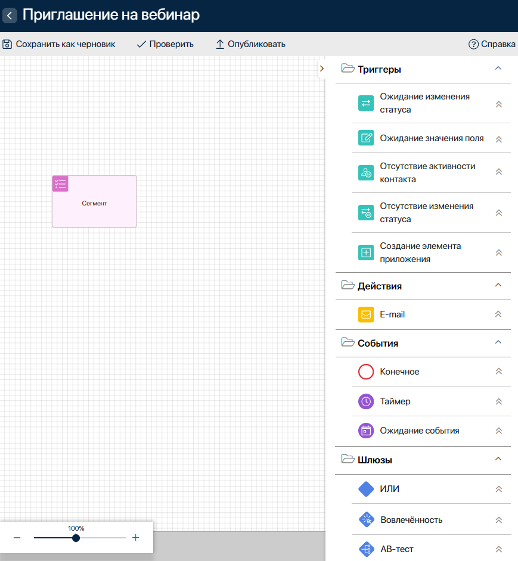
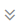

In the customer journey map designer, you can create a map scenario as a chain of triggers, activities, gateways, and events, and also configure settings for starting and ending this scenario.
начало внимание
Working with customer journey maps is only available in the On-Premises edition.
конец внимание
You can switch to the designer:
- When creating a customer journey map.
- By clicking the Edit button on the page of a map with the Draft or Published status.
Once the map is activated, you cannot change its scenario.
Customer journey map designer page
When switching to the designer, a welcome guide window will open, which briefly explains the basic steps of creating a map scenario.

The customer journey map designer page looks like this:

- Modeling canvas. A workspace where you can create a map scenario as a chain of blocks. The Segment block is displayed here by default, which always starts the scenario.
- Top panel of the designer. Allows you to proceed to the next steps:
- Save as Draft. Save changes in the map with the Draft status.
- Check. Check if the settings are correct at any stage of scenario creation.
- Publish. If the map scenario is ready, select this action and then in the opened window set the start and end parameters of the map. After publishing the map status will change to Published. The map can be activated and its scenario will automatically start running.
If errors are detected while checking or publishing the map, you will see their description at the bottom of the page. The blocks with errors will also be highlighted in red. You will not be able to publish a map with errors.
- Help Center. Launch a guide to working in the designer. You can also disable or enable the display of tooltips in blocks in the sidebar of the designer.
- Designer sidebar. It contains blocks for creating a scenario. Click to the right of the block name to view a tooltip about working with the block. The available ones here are:
- Triggers. They track changes in the app items and initiate a transition to the next step in the scenario.
- Activities. A block for configuring an email campaign.
- Events. They impact the execution time of subsequent steps in the scenario.
- Gateways. They allow you to divide the scenario into several paths depending on the specified conditions.
Found a typo? Select it and press Ctrl+Enter to send us feedback